Using the Editor
This page covers the editor itself: its panels, what each one is for and how to use it. For how a graph is made of nodes, attributes and code, see Graphs and Nodes; for how layers stack and pull each other in, see Layers and References.
Checkout our example graphs here, and the workflow and transition map here.
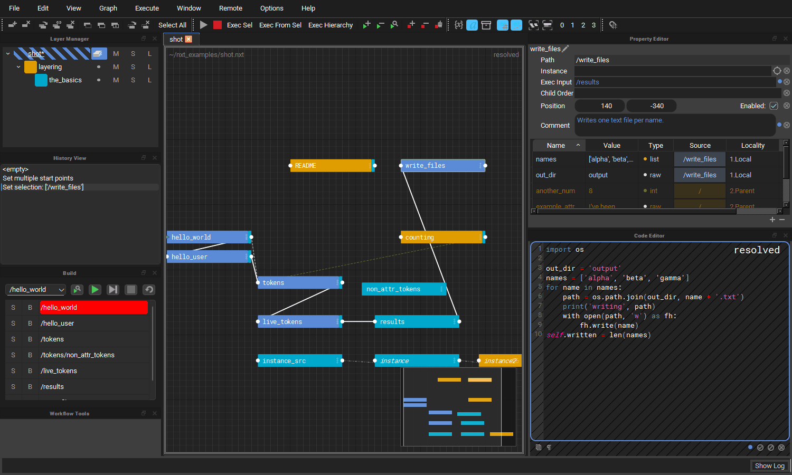
The editor is made of a graph (the stage view) in the middle, surrounded by dock widgets that can be moved, tabbed and closed: the Layer Manager, Property Editor, Code Editor, History View, Build View, Workflow Tools, Output Log and Hotkey Editor. Closed docks come back from the Window menu.
Docks and layout
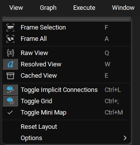
- Float a dock by dragging its title bar or tab out of the window, or, where several docks share a space as tabs, by double clicking its tab.
- Dock it again by dragging it back over the window until a space opens for it, or by double clicking its title bar, which returns it to where it was docked last.
- View > Reset Layout puts every dock back where a fresh install has it, with its default size. It resets to the editor's own layout, not to the one you left at the end of your last session. The layout you leave the editor in is still remembered for next time.
Stage View
The stage view draws the composited graph for the open tab. Each tab is composited and drawn the first time it is selected, and kept from then on, so switching back to a tab is instant.
Mini map
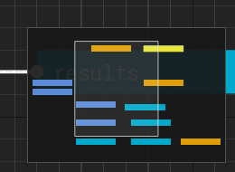
The mini map in the bottom right corner shows the whole graph, the selected nodes, and a rectangle for the part of the graph the view is showing.
- Click anywhere in the mini map to centre the view there, or drag in it to pan.
- Toggle it with View > Toggle Mini Map or
Ctrl+M. The choice is remembered between sessions.
Animate Nodes
Nodes no longer slide open when a parent is expanded. Every child is animated separately, so a node with hundreds of children opens noticeably slower that way. The Animate Nodes action turns the animation back on. It is listed under Graph in the Hotkey Editor, where you can give it a shortcut, and the choice is remembered between sessions.
Deleting and pasting nodes
Del removes the selected node from the target layer. If no other layer has
an opinion on the deleted node's path, its descendants are removed with it,
so nothing is left behind as an implied "ghost" node. If another layer does
provide the node, the node from that layer shows through, as you would
expect from layering. Shift+Del deletes the node and all of its
descendants.
Pasting nodes (Ctrl+V) is a single step on the undo stack however many
nodes are pasted.
Code Editor
The code editor shows the compute of the selected node. It is read only
until you double click into it. Accept your edit with Ctrl+Enter, the
numpad Enter, or by clicking off the code, and cancel it with Esc.
The shortcuts below only apply while the code editor has focus, so for
example Ctrl+D expands the selection in the code editor but duplicates the
selected node in the graph. While the code editor, or one of its find
fields, has focus the main window's shortcuts are suspended so typing cannot
trigger them. All of these can be rebound in the
Hotkey Editor, and most are also on the code
editor's right click menu, with the line commands under Line.
| Action | Shortcut | Notes |
|---|---|---|
| Find In Code | Ctrl+F |
Opens the find panel, filled in with the selected text |
| Replace In Code | Ctrl+H |
Opens the find panel with the replace row showing |
| Find Next / Find Previous | F3 / Shift+F3 |
Wraps around at either end |
| Go To Line | Ctrl+G |
|
| Duplicate Line | Ctrl+Shift+D |
Copies the selected line(s) below |
| Move Line Up / Down | Alt+Up / Alt+Down |
|
| Delete Line | Ctrl+Shift+K |
|
| Expand Selection | Ctrl+D |
The word under the cursor, then the line, then everything |
| Complete Word | Ctrl+Space |
See Completion |
| Go to a token's node | Ctrl+click |
See Following tokens |
| Indent / Un-Indent Line | Tab / Shift+Tab |
Works on several lines at once |
| Comment Line | Ctrl+/ |
|
| Execute Selection Locally | Shift+Return |
|
| Execute Selection Globally | Ctrl+Shift+Return |
|
| Copy Resolved Code | Ctrl+Shift+C |
Two kinds of find
Ctrl+F in the code editor searches the compute you are looking at.
Ctrl+F anywhere else opens the graph wide Find and Replace, which
searches node attributes across the whole stage.
Find and replace
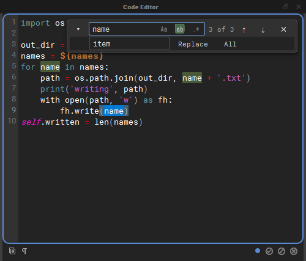
The find panel floats over the top right corner of the code, so the code never moves when it opens.
- Type in the Find field and every match is highlighted, with the
current match in a stronger colour. The counter shows which match you are
on (
3 of 3), orbad patternwhen a regular expression is not valid. EnterandShift+Enterin the field,F3andShift+F3, or the arrow buttons step through the matches.- The three toggles inside the field are regular expression (
.*), whole word (ab) and match case (Aa). - The chevron on the left shows the replace row. Replace replaces the current match and moves on to the next one; All replaces every match in one undoable step. Replacing needs the editor to be in editing mode; while it is read only the panel says double click to edit.
Esccloses the panel.
Go to line
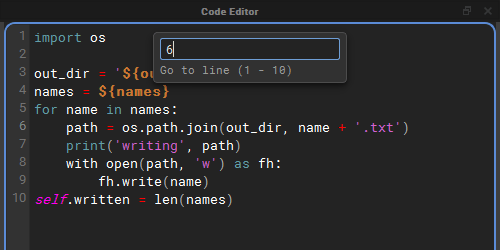
Ctrl+G drops a small field from the top of the editor. The view scrolls to
the line as you type, Enter goes there, and Esc puts the cursor back
where it was before you started.
Highlighting
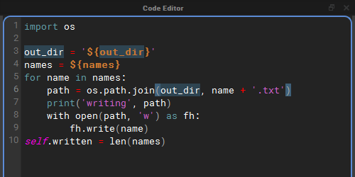
Every use of the word under the cursor is highlighted, and so is the bracket next to the cursor together with its partner. A bracket without a partner is drawn in a warning colour.
Syntax colouring applies to every match on a line, so a line with several tokens or strings has all of them coloured, not only the first.
Auto-pairing
While you edit, brackets and quotes come in pairs:
- Typing
(,[,{,"or'adds the closing character after the cursor, so typing${gives${}with the cursor inside. - Typing a closing character that is already right after the cursor steps over it rather than adding a second one, so typing the closer yourself out of habit does no harm.
- With text selected, typing an opening bracket or a quote wraps the selection in the pair, and the text stays selected.
- A quote typed straight after a letter or digit, or before one, is just
typed, so apostrophes and string prefixes such as
f'work as usual. Typing"""gives exactly three quotes. - Keyboard layouts that type
[and{withAltGrpair them too. - Accepting a token completion inside
${}does not leave a spare}behind.
Following tokens
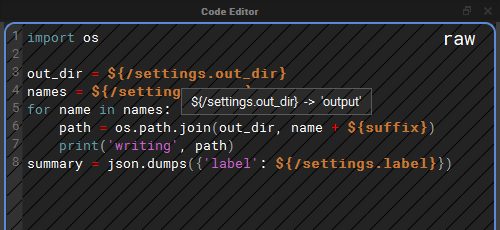
In Raw View (Q), where the code shows its ${} tokens, the tokens can be
inspected and followed:
- Hover a token that reads an attribute, such as
${/settings.out_dir}or a local${suffix}, to see the value it resolves to in a tooltip. If the token names a node that does not exist, the tooltip says so instead.${file::},${contents::},${path::}and tokens added by plugins are never resolved by hovering, because resolving them reads files or runs plugin code. Ctrl+clicka token that reads an attribute of another node to select that node in the graph and frame it. WhileCtrlis held, the mouse pointer turns into a pointing hand over a token you can follow. A token that reads the node's own attribute stays where it is, and a token naming a node that does not exist logs a warning.
Ctrl+click does nothing while you are editing the code, so it can never
take you to another node, and accept your edit on the way, by accident.
Completion
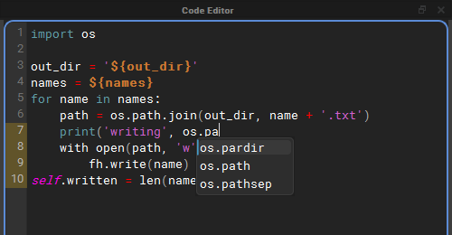
Ctrl+Space offers completions for the word in front of the cursor. Use the
arrow keys to choose one and Enter or Tab to insert it; Esc closes the
list. With Code Editor Autocomplete on, the list also appears by itself
once you have typed two characters of a word.
Completions come from six sources:
| Source | What it offers |
|---|---|
| Python Builtins | Python's keywords and builtins, such as return and enumerate. |
| Imported Modules | Names inside the modules this compute imports, and inside the modules the world node (/) imports, since every compute can use those: os.pa offers os.path, and os.path.jo offers os.path.join. Aliases such as import numpy as np are understood. Only modules named on import lines are looked at, and a module that fails to import is skipped. |
| Node Attributes And Tokens | The node's attributes written as name, self.name and ${name}; the names nxt gives every compute, STAGE, self, w, execute, nxt_path, ExitNode, ExitGraph and types (nxt_path. looks inside it); the token prefixes nxt knows about, including any added by plugins: ${file::, ${filelist::, ${path:: and so on; and node paths inside ${/. |
| Words In This Compute | Words already written in the compute, which catches your own variable names. |
| Host Modules | The modules the host application already has loaded, under the names scripts usually give them, so they complete before any import line is written: cmds, mc, mel, om, oma, omui, omr and pm in Maya, unreal in Unreal, bpy in Blender, pyfbsdk in MotionBuilder and pymxs in 3ds Max. Only modules the host has already loaded are offered; nothing is imported for them. In the standalone editor there are none. |
| Python Analysis (jedi) | Optional. Uses jedi to work out what a name is, so that after a dot it can complete what a call returns or what a variable holds. See Python analysis with jedi. |
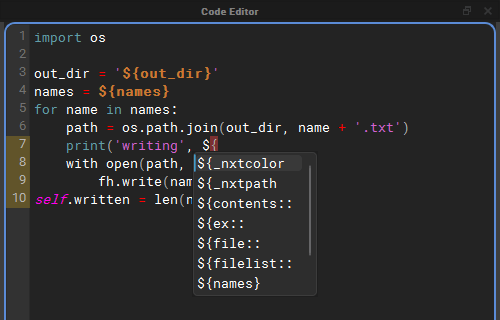
Node paths and their attributes
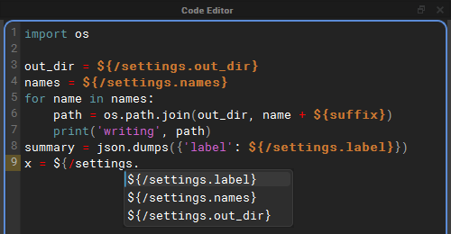
Inside a token that starts with ${/, completion offers the paths of the
nodes in the graph (${/settings, ${/export/report). Once a node path is
followed by a dot, it offers that node's attributes as whole tokens, so
choosing one writes ${/settings.out_dir} complete with its closing brace.
Python analysis with jedi
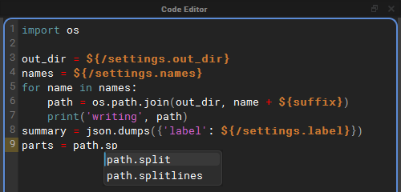
The other sources read names: they can complete os.path.jo because os
is imported, but not what os.path.join(...) returns. jedi analyses the
code, so after path = os.path.join(out_dir, name) it knows path is a
string and offers path.split and path.splitlines.
- It is optional. Install it with
pip install nxt-editor[completion](see Standalone Installation). Without it, Python Analysis (jedi) is greyed out in the menu, and its description says how to install it. - It is only asked after a dot. Bare names still come from the other sources, so switching one of those off keeps its names out of the list.
- It is asked once typing pauses, or straight away with
Ctrl+Space. The answer is kept while you type more of the same name. - It sees the world node's imports and the names nxt gives every compute.
${}tokens are read as plain strings, so a compute full of tokens can still be analysed. - jedi is loaded the first time it is needed, not when the editor starts, and keeps its cache in the nxt user directory.
Autocomplete options
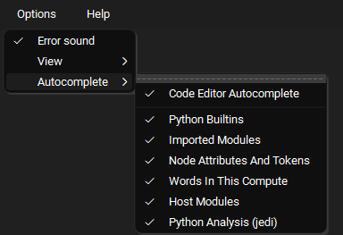
Options > Autocomplete holds the completion switches. They are all on by default and remembered between sessions, and a change applies straight away, even to a list that is already open.
- Code Editor Autocomplete: offer completions while you type. When it is
off, completions only appear when you press
Ctrl+Space. - Python Builtins, Imported Modules, Node Attributes And Tokens, Words In This Compute, Host Modules and Python Analysis (jedi): the sources described above.
Layer Manager
The Layer Manager lists the layers of the open graph: the top layer and, nested under it, the layers it references. Right click a layer for its menu.
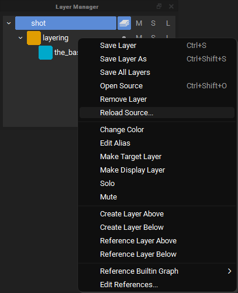
Two items on this menu change what a layer pulls in from disk: Edit References... and Reload Source....
Reference Editor
Edit References... opens the Reference Editor on that layer.
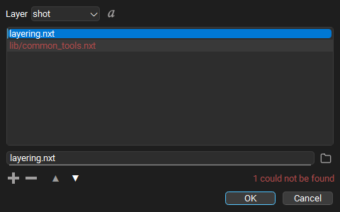
- Layer picks which layer's references you are editing. Only layers that are open in this graph and not locked can be edited.
- The list holds that layer's references in stack order: a reference higher in the list is stronger than the ones below it. Drag a row, or use the up and down arrow buttons, to change the order.
- The field under the list edits the selected reference. What you type is stored exactly as written, so a path with an environment variable in it, a path relative to the layer, or a path under one of your file roots keeps working on other machines. The folder button next to the field picks a file with a file browser instead. A picked file that sits next to the layer, or in a folder below it, is stored relative to the layer; anything else is stored as a full path. A relative path is looked for under your file roots before the layer's folder, so check the resolved view if a root might hold a file of the same name.
- + adds an empty row and puts the cursor in the field, ready to type. An empty row that is never filled in is dropped. - removes the selected reference.
- The resolved toggle next to the layer picker switches every row between the path as stored and where it resolves to on this machine. Resolved paths are only for looking: they cannot be edited, so this machine's answer is never written into the layer.
- Missing references are drawn in red and counted
(
1 could not be found). They are kept exactly as written, in case they resolve on another machine. Hover over a row to see where nxt looked.
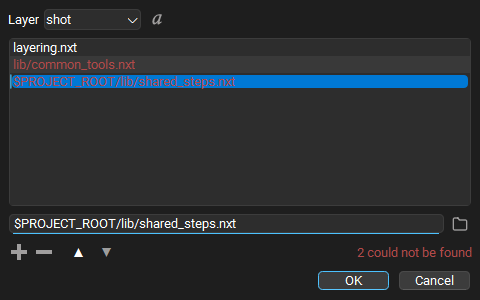
Pressing Enter in the field does not close the dialog. OK applies the
change to the open graph: the referenced layers are reloaded, the graph is
composited again, and the layer is marked unsaved. Nothing is written to
disk until you save the layer. Applying is one step on the undo stack, and
pressing OK with nothing changed does nothing at all.
Reload Source
Reload Source... reads a layer from disk again, for example when somebody else has saved a file your graph is built on. It is on every layer's right click menu, and in the File menu next to Save Layer, where it acts on the target layer.
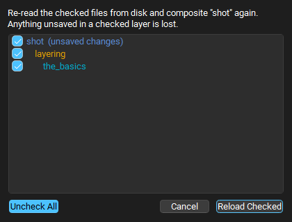
A layer is rarely just one file, so the dialog lists the layer and every layer it references, as deep as they go, indented to show which layer references which. Every row starts checked; uncheck the files you do not want read again, or use the Uncheck All / Check All toggle. A file referenced from several places is listed once. Rows with unsaved changes say so, because reloading them throws those changes away.
Reload Checked reads the checked files again and composites the graph. If a file now references something different, the layer stack follows it: layers can appear, disappear or change order. Reloading is one step on the undo stack, and undoing it puts back exactly what each layer held before, without reading the files again.
Show in Explorer
Show in Explorer opens the folder a layer is saved in, with the layer's file selected. On a Mac it is called Reveal in Finder and opens the Finder; on Linux it is Show in File Manager. It is on every layer's right click menu, and in the File menu, where it acts on the target layer. A layer that has never been saved has no file to show, so the item is greyed out. If the file has been moved or deleted, the nearest folder that still exists is opened instead.
Build View
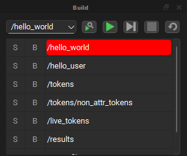
The Build View lists the nodes that will run, in execution order, from the start point chosen in the drop down. Next to the drop down are buttons to find the selected node, run the build, step through it, stop it and restart it.
- Find the selected node (the magnifier) scrolls the build so the node selected in the graph is at the top of the list, and marks its row. A selected node is not always part of the build: it may be disabled, outside the start point's branch, or not executable at all. In that case the Output Log says the node is not in the build, and the editor dings.
- The build stays current as you edit. Enabling or disabling a node, changing a start point, exec input, child order, instance path or parent, and renaming or deleting a node all update the list straight away.
- If the graph has changed since the last run in a way the cached runtime does not know about (a node was moved, renamed or deleted), the cache is cleared and rebuilt when the build is set up, before anything runs, and the Output Log says so.
- Stop ends the build once the node that is running finishes, whether the build was running or being stepped, and puts the start point and the build list back.
AI Assistant
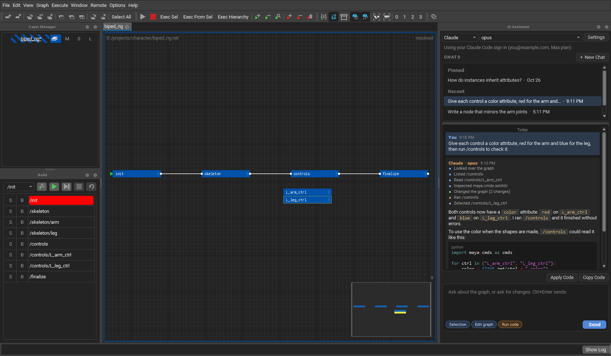
The AI Assistant is a panel for chatting with Claude, OpenAI, Grok or a local model about the open graph. It can look over the graph, explain it, change it and test its changes, and it shows each step it takes as it works.
It is off until it is turned on in Options > AI Assistant. Once it is on, Window > AI Assistant opens the panel. Nothing is sent to a provider until you ask it something.
The parts of the panel
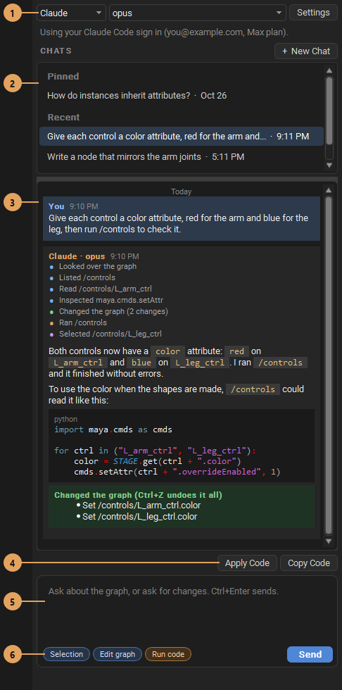
- Provider and model. Who answers, and which of their models. The line under them says which sign in or key is being used. Settings opens Options > AI Assistant.
- Chats. Every chat is kept, so New Chat does not lose the last one. Click a chat to go back to it and carry on. Right click a chat to Pin it to the top or Delete it. Pinned chats are listed first, then the rest, most recent first. Chats are saved in the editor's prefs folder, on this computer only.
- The conversation. Your messages and the replies, each with the time it was sent, and the day wherever it changes. Each reply lists the steps it took, with a dot for each kind: blue for looking, purple for selecting nodes to show you, green for changing the graph, orange for running code, and a red cross for a step that could not be done. Changes it made are listed in a green box under the reply.
- Apply Code and Copy Code show when a reply has a block of code. Apply Code puts it in the selected node, and undo puts the old code back. Copy Code copies it.
- The message box.
Ctrl+Entersends. While a reply is coming, Send becomes Stop. - What it may do. These toggles are remembered:
- Selection sends the selected nodes, their attributes and code with your message.
- Edit graph lets it make, change and delete nodes, hierarchies,
code, attributes and layers. All the changes in one reply are one undo
step, so
Ctrl+Ztakes them back. - Run code lets it run nodes, builds and snippets of Python, in the editor or in the host such as Maya, to test its work and read what they print. It is off until you turn it on, and shows orange when on.
Signing in
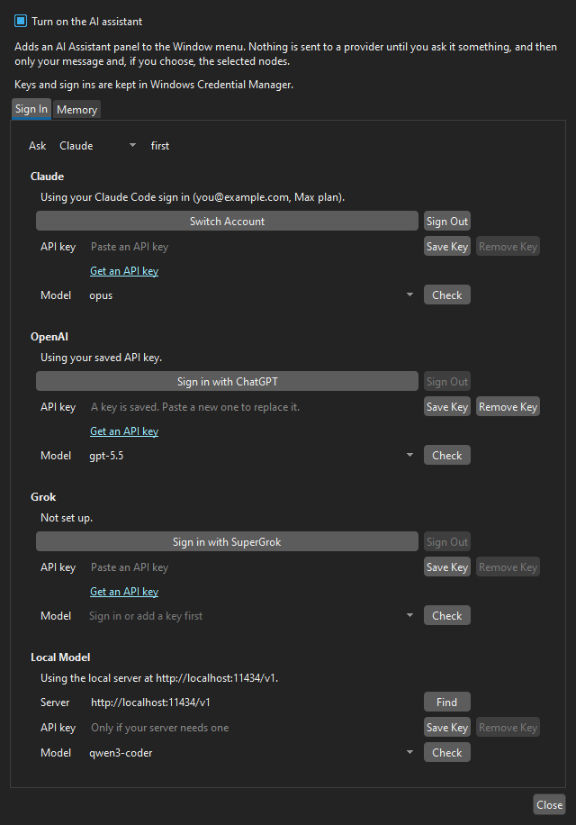
Options > AI Assistant > Sign In has a box for each provider:
- Claude uses the Claude Code app's sign in, so any Claude plan works and the editor never sees the account's token. Sign in with Claude Code (or Switch Account) runs Claude Code's own sign in in the browser. Claude Code needs to be installed for this.
- OpenAI can sign in with a ChatGPT plan, and Grok with SuperGrok.
- Each can use an API key instead, or the usual environment variable
(
ANTHROPIC_API_KEY,OPENAI_API_KEY,XAI_API_KEY). - Local Model points at a server on this computer or the network: Ollama, LM Studio, llama.cpp, vLLM or Jan. Find looks for one that is running.
Ask ... first picks the provider the panel starts with, and Check asks a provider for its models. Keys and sign ins are kept in the operating system's secure store.
How it works with the graph
The assistant uses tools to look at the graph rather than guessing: it can look over the layers and nodes, list a hierarchy, read a node's attributes and code, search, check the build order, find problems and read the Output Log. With Edit graph on it can change the graph, and with Run code on it can run what it changed and read the output.
With a Claude sign in, the tools are served to Claude Code by the editor's own MCP server, which only listens on this computer and takes a new key for every reply. The other providers use the same tools through their own tool calling. A model that can not use tools answers without them, and changes the graph with a block of changes the editor applies instead.
Reading code and imports
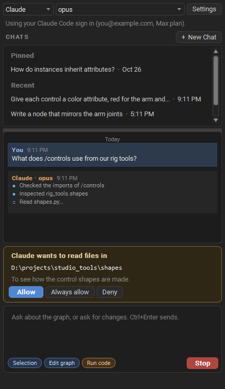
The assistant can read code on this computer. The open graph's folder is free to read. Before it reads anywhere else it asks, with its reason:
- Allow lets it read that folder for the rest of the chat.
- Always allow lets it read the folder in every chat, and remembers it in Memory with what the folder holds, so later chats know to look there.
- Deny says no, and it does not ask again in that reply.
It can also inspect the modules a graph imports: where each one is found,
what functions and classes it has and their arguments, or one of them in
full. Modules are read as source, without being imported, so their code is
not run. A module that is already imported, such as maya.cmds in Maya, is
looked at as it is.
Memory
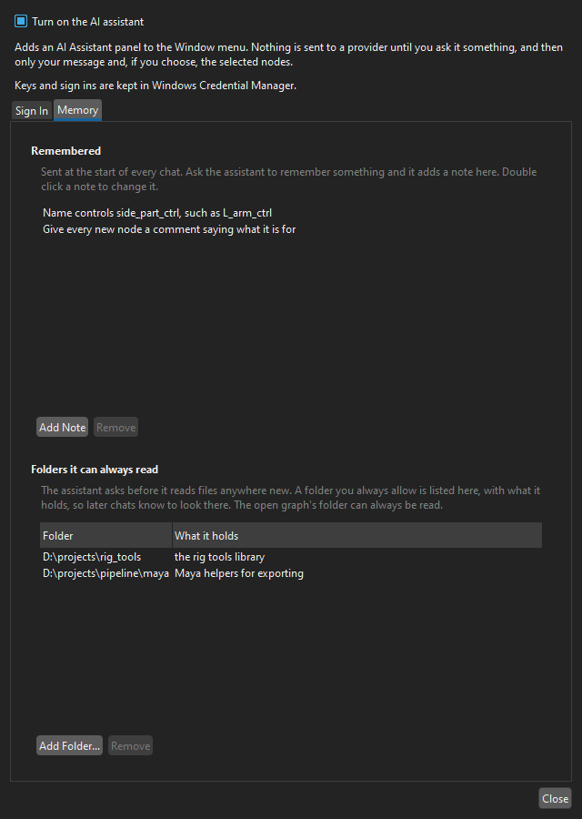
Ask the assistant to remember something, such as how you name controls, and it saves a short note. Notes are sent at the start of every chat. Options > AI Assistant > Memory lists them, and the folders it can always read with what each one holds. Double click a note, or what a folder holds, to change it; Remove takes it away, and Add Note and Add Folder... add your own.
Property Editor, History View, Output Log and Workflow Tools
See the tutorial videos for a tour of these. The History View lists every step on the undo stack, including reference edits and reloads.